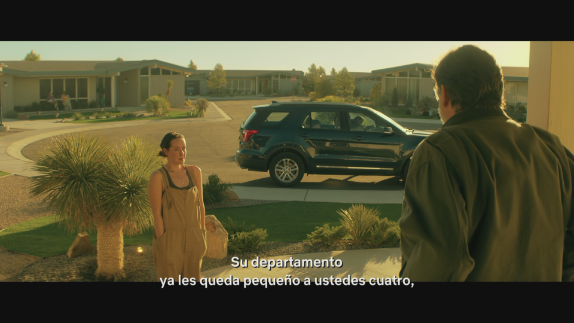

This is a plain article page used by the Minus test suite. It contains one real advertisement capture and one regular content image of the same size, plus normal text around them.

More filler text so the page looks like an ordinary article. The extension should cover exactly one of the two images above — the advertisement — with a Spanish flashcard overlay, and leave the content image alone.